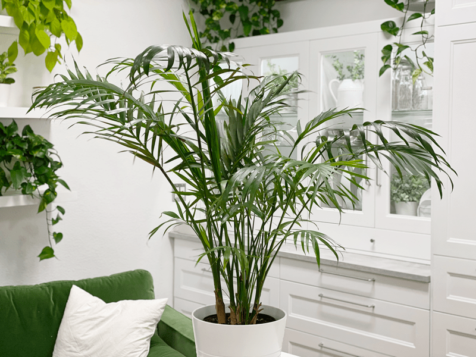

Parlor Palm | Care Difficulty – Moderate
There is a wide range of houseplant palms available, and luckily, most of them have similar growing needs…you just have to be sure you can meet those needs. I don’t say that to scare you. I want you to enjoy your palm, and you won’t be doing that if it is suffering. When plants suffer, we do too, because we want them to be vibrant and full of life. Who wants to hang around with a dead plant?

Decorating with Palms
Palms are great to use to break up a section of a blank wall, to fill an empty corner, to soften the edges of windows or furniture, or to act as a living sculpture at the end of a side table (depending on the size). You can even create a row of houseplant palms to make a lovely living screen or room divider, too! But remember, anytime we are decorating with plants, we must FIRST determine if their new “home” offers the right conditions. Their needs are priority over our decorating desires. Another thing to keep in mind is to avoid too much traffic brushing against or pulling on the fronds—this will weaken the plant and possibly kill the frond.
Water Requirements
The amount of water the parlor palm needs will depend on how much light it receives. Brighter light means more water, while lower lighting means less water. For small palms, the surface of the soil should be dry before you water further. For larger palms, the soil should be dry at least one inch down before you water. Be sure to water around the base of the plant to avoid “dry spots.” Dry spots left in the soil could result in a drastic loss of fronds.
The goal is to keep the soil slightly moist without overwatering. As with any indoor plants, grow houseplant palms in containers that have drainage holes, so excess water can escape. Most palms don’t like wet feet and can suffer from root rot if too much water builds up at the bottom of the pot. So when you water your plant, pour water until it comes out the drainage tray, and then empty the tray immediately.
Light Requirements
Indoor palms can suffer from too much or too little light. Just like Goldilocks, they need it “just right.” Most indoor palms require natural bright indirect light all year, so if you place the palm near an east-facing or south-facing window with filtered light, it should get enough natural light. They often do well with northern exposure, which is exactly what mine gets. I had to move my plant around a few times to find the right spot for it. Here’s a fun trick…if your palm is getting enough light, it should cast a shadow where it stands.
Temperature Requirements
Indoor palms thrive in warmer temperatures. The ideal temperature is between 60-70 degrees (F). Palms that are kept too cool show signs of cold injury, which includes brownish-red areas on the leaves. To prevent chilling injury, keep plants in a room with a temperature above 45 degrees (F) and away from drafty areas, such as near windows, doors, or air-conditioning units.
Fertilizer – Plant Food
Palms require a slow-release or diluted liquid fertilizer, but only when the plant is actively growing. The active growth period for palms is from late winter through early fall. If you are not sure about how much fertilizer to use, it is better to underfeed than overfeed the plant.
 Additional Care
Additional Care
- Remove any dead, discolored, damaged, or diseased leaves and stems as they occur, with clean, sharp scissors.
- Clean the leaves often enough to keep dust off of them. In the summer, I take my palm outside and spray it down with the hose; otherwise, I will put it in the shower to help rinse the dust off.
- Parlor palms prefer high humidity. Dry air encourages spider mites to attack the plant.
- Remove only the parts of the plant that turn brown or yellow, as soon as they appear. A parlor palm grows from a terminal bud. Cutting off this terminal bud will prevent new growth. Cut frond (leaves) only. Do not cut the stems.
Plant Characteristics to Watch For
Diagnosing what is going wrong with your plant is going to take a little detective work, but even more, it requires patience! First of all, don’t panic and don’t throw a plant out prematurely. Take a few deep breaths and work down the list of possible issues.
Below, I am going to share some typical symptoms that can arise. When I start to spot troubling signs on a plant, I take the plant into a room with good lighting, pull out my magnifiers, and begin by thoroughly inspecting the plant.
Brown leaf tips
- Brown tips may be due to from several factors. Here are three things to check: dry air, adding too much fertilizer, or consistently underwatering the plant.
- Solution: If you have determined that the air may be too dry for the plant(s), add a room humidifier or group the palm with other plants (grouping plants creates an ecosystem, which increases humidity). Let’s talk fertilizer. If you are giving your palm too much fertilizer at one time or even over longer periods of time, that can make the leaf tips go brown (cut back if this is the case). If you are guilty of underwatering and the palms suffer from dry soil too long, they’ll start to lose the tips of their leaves.
Brown, reddish areas on leaves
- Palms that are kept too cool show signs of cold injury, which include brownish-red areas on the leaves.
- Solution: Prevent chilling injury by keeping your plant in a room with a temperature above 60 degrees (F) and away from drafty areas, such as near windows, doors, or air-conditioning units.
Gray / brown-colored scorched leaves that wither and die
- This can be a sign of too much direct sunlight.
- Solution: You guessed it–move the palm. It can be hard to relocate houseplants mainly when you find that perfect decorating spot for them, but the plant’s health is always the priority.
Dried leaves with brown margins
- If a plant doesn’t get enough water, it will tell you a story through the leaves, which will appear dry and have brown margins.
- Solution: It’s time to up the watering game! See the watering guidelines above.
Freckles on the leaves
- If you see spots like this on the plant leaves, it’s a sign of leaf spot, which is fungal or bacterial. Usually it is more cosmetic than anything else, yet too much can cause quite a bit of damage and loss of foliage.
- Solution: Remove the infected leaves to increase air circulation to the rest of the plant, avoid overhead watering (keep it on the soil), and pull away from other plants. A bit of fungicide can help as well.
Common Bugs to Watch For
If you want to have healthy house plants, you MUST inspect them regularly. Every time I water a plant, I give it a quick look-over. Bugs/insects feeding on your plants reduces the plant sap and redirects nutrients from leaves. Some chew on the leaves, leaving holes in the leaves. Also watch for wilting or yellowing, distorted, or speckled leaves. They can quickly get out of hand and spread to your other plants.
IF you see ONE bug, trust me, there are more. So, take action right away. Some are brave enough to show their “faces” by hanging out on stems in plan site. Others tend to hide out in the darnedest of places, like the crotch of a plant or in a leaf that has yet to unfurl.
- Mealybugs look like small balls of cotton. They can travel slowly, but they have a strong will and determination! Though its slow movement, if any plant is touching another, there is a chance the mealybug will hitch a ride on a new leaf and spread. They breed like rabbits of the insect world. Females can deposit around 600 eggs in loose cottony masses, often on the underside of leaves or along stems.
- Scales are dark-colored bumps that are primarily immobile insects that stick themselves to stems and leaves. They are rather inconspicuous and don’t look like a typical insect. They can range in color but are most often brownish in appearance. They’re called “scales” primarily due to their scale-like appearance on a plant, due to waxy or armored coverings. They are often seen in clumps along a stem, sucking away at the plant’s juices with their spiky mouthpart.
- Spider mites are more common on houseplants. They are not insects; they are related to spiders. These appear to be tiny black or red moving dots. Spider mites are nearly invisible to the naked eye. You often need a magnifying lens to spot them, or you may just notice a reddish film across the bottom of the leaves, some webbing, or even some leaf damage, which usually results in reddish-brown spots on the leaf.
Toxicity
A parlor palm in a non- poisonous houseplant, but don’t go chewing on it.
© AmieSue.com